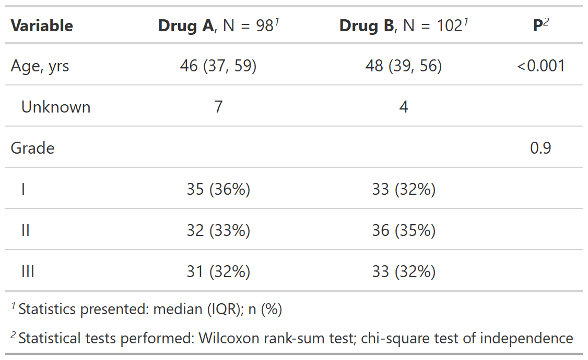

Column labels can be modified to include calculated statistics; e.g. the N can be dynamically included by wrapping it in curly brackets (following glue::glue syntax).
modify_header( x, update = NULL, stat_by = NULL, text_interpret = c("md", "html"), ... )
Arguments
| x | gtsummary object, e.g. |
|---|---|
| update | list of formulas or a single formula specifying the updated
column label. Columns from |
| stat_by | Used with
Syntax follows |
| text_interpret | String indicates whether text will be interpreted with
|
| ... | Specify a column and updated column label,
e.g. |
Value
Function return the same class of gtsummary object supplied
Example Output
Example 1

Example 2

See also
Other tbl_summary tools:
add_n(),
add_overall(),
add_p.tbl_summary(),
add_q(),
add_stat_label(),
bold_italicize_labels_levels,
inline_text.tbl_summary(),
inline_text.tbl_survfit(),
modify_footnote(),
modify_spanning_header(),
tbl_merge(),
tbl_stack(),
tbl_summary()
Other tbl_regression tools:
add_global_p.tbl_regression(),
add_nevent.tbl_regression(),
add_q(),
bold_italicize_labels_levels,
combine_terms(),
inline_text.tbl_regression(),
modify_footnote(),
modify_spanning_header(),
tbl_merge(),
tbl_regression(),
tbl_stack()
Other tbl_uvregression tools:
add_global_p.tbl_uvregression(),
add_nevent.tbl_uvregression(),
add_q(),
bold_italicize_labels_levels,
inline_text.tbl_uvregression(),
modify_footnote(),
modify_spanning_header(),
tbl_merge(),
tbl_stack(),
tbl_uvregression()
Examples
# create summary table tbl <- trial[c("age", "grade", "trt")] %>% tbl_summary(by = trt, missing = "no") %>% add_p() # print `.$table_body` to show column names and update headers tbl$table_body#> # A tibble: 5 x 6 #> variable row_type label stat_1 stat_2 p.value #> <chr> <chr> <chr> <chr> <chr> <dbl> #> 1 age label Age, yrs 46 (37, 59) 48 (39, 56) 1.90e-65 #> 2 grade label Grade NA NA 8.71e- 1 #> 3 grade level I 35 (36%) 33 (32%) NA #> 4 grade level II 32 (33%) 36 (35%) NA #> 5 grade level III 31 (32%) 33 (32%) NA# Example 1 ---------------------------------- # updating column headers modify_header_ex1 <- tbl %>% modify_header( update = list( label ~ "**Variable**", p.value ~ "**P**" ) ) # Example 2 ---------------------------------- # using `stat_by=` argument to update headers modify_header_ex2 <- tbl %>% modify_header( stat_by = "**{level}**, N = {n} ({style_percent(p)}%)" )